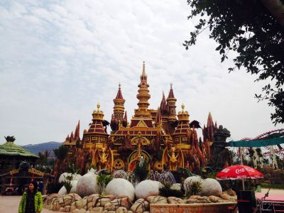

贵安欢乐世界，占地600亩，一个全国性的超级游乐场。充分利用自然的地形地貌，运用梦幻唯美的装饰手法、现代休闲理念和高新娱乐科技手段，有机的把最先进、最好玩的游戏设备、演艺项目融入主题场景之中，营造出惊奇、热烈、刺激的超级游乐王国，带给游客无尽的惊奇和超凡的享受。恐龙时代的遗迹遍布视野，凝固的历史瞬间把人传送回亿万年前那个消失已久的史前世界：沐浴在夕阳柔和余晖中的侏罗纪公园，伸展着优美长脖子的雷龙，缓步走向湖面；霸王龙巨大的利齿撕裂似鸡龙的血肉，发出振聋发聩的怒吼；铺展翅膀的翼龙，在陡峭的峡谷间飞翔；草原上群龙疾奔，与你擦身而过。
